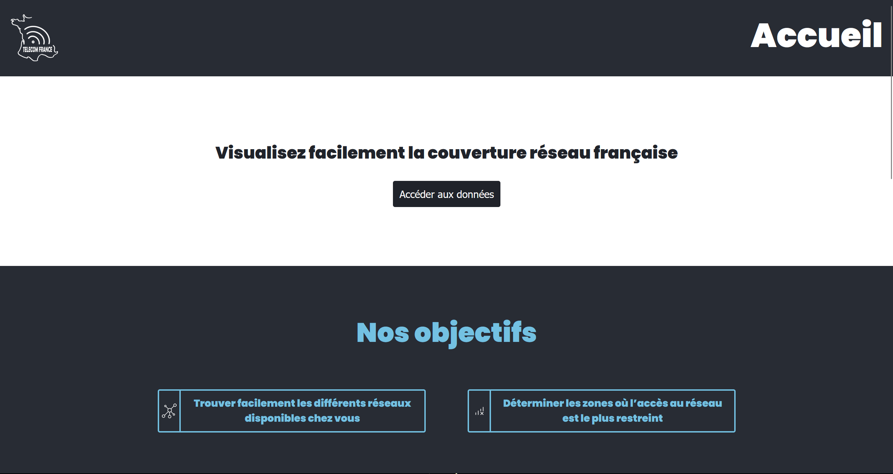
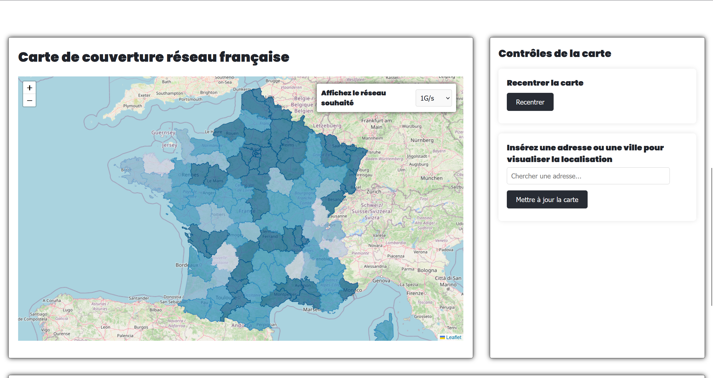
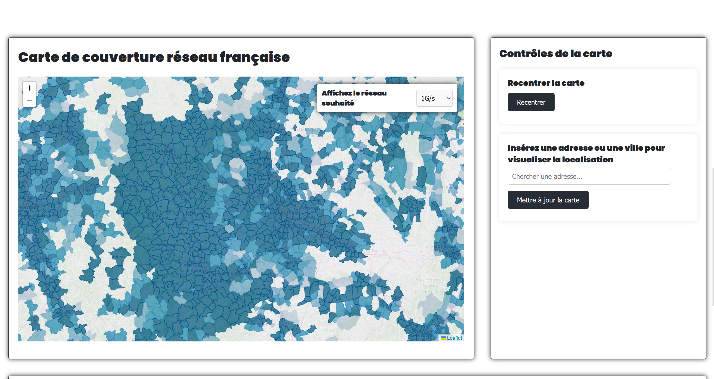
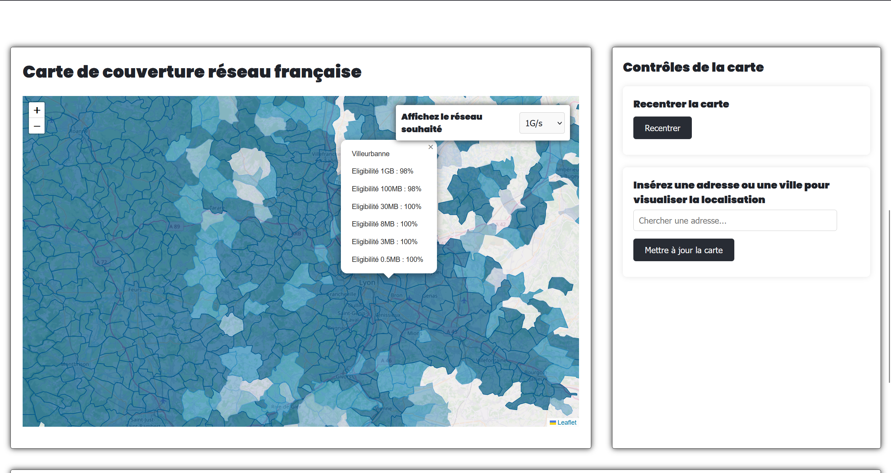

Overview
This project provides an interactive visualization of network coverage in France through a map interface and data tables. It uses a database of French municipalities to map access precisely, while offering speed-based filters.
Main features
- Interactive visualization: Free exploration of the French map to inspect overall coverage.
- Dynamic zoom: Municipalities appear in more detail as you zoom into a region.
- Throughput filtering: Coverage can be isolated using specific speed thresholds.
- Data updates: The structure is designed to reflect recent network rollouts.
Gallery



Technical architecture
Environment and database
- Node.js & npm: Runtime and package manager for the server.
- Database: MySQL, locally hosted with XAMPP/Laragon.
- Geographic data: The
communes.sqlbootstrap file stores coordinates and statistics.
Runtime structure
- Configuration:
config.jsonbinds the server to the database. - Local server: Port 3000 used during development and for the mapping interface.
Learning outcomes
- Integration of an interactive mapping library.
- Database connection and querying between Node.js and MySQL.
- Processing and displaying large data sets (French municipalities).
- Interactive filters that update the visual rendering in real time.